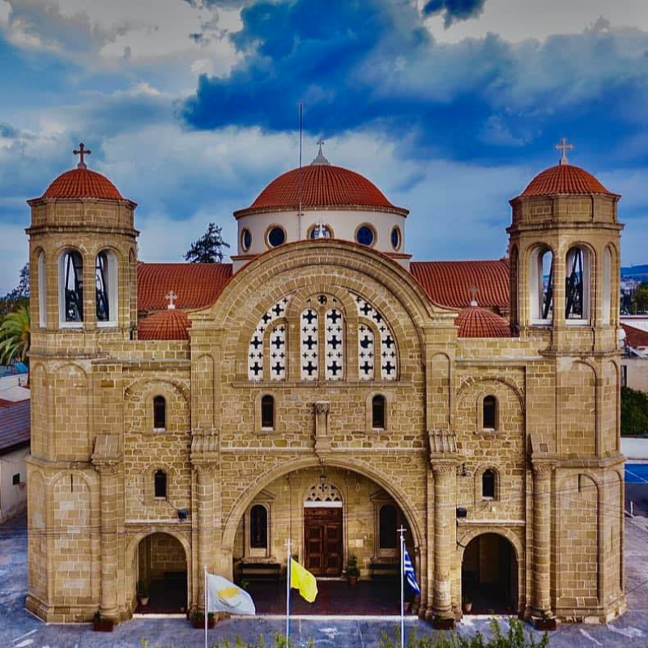
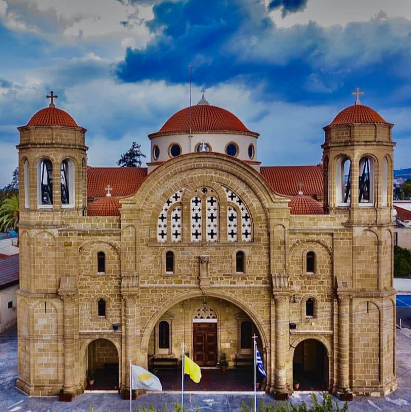

Χτισμένες δίπλα στο κύμα ή κρυμμένες από τους πειρατές στην ενδοχώρα των νησιών, οι Παναγιές του Αιγαίου, ευρύχωρες στην κεντρική πλατεία της Χώρας ή μικροσκοπικές και απομονωμένες ανάμεσα στις ξερολιθιές, αποτελούν έναν ύμνο πάνω απ’ όλα στην ίδια την ομορφιά και τη μαγεία του Αρχιπελάγους.
Οι περισσότερες γιορτάζουν στην καρδιά του Αυγούστου, ακριβώς την ώρα που διαφαίνεται η αρχή του τέλους του καλοκαιριού, και κρύβουν για τον καθένα μας διαφορετικούς συμβολισμούς.


 
Για τους ξενιτεμένους αντιπροσωπεύουν το ετήσιο αντάμωμα με τους ανθρώπους τους.
Για τους λάτρεις της παράδοσης συμβολίζουν την επιστροφή στην πατρίδα των παιδικών τους χρόνων.
Για τους φιλότεχνους αποτελούν μια μυσταγωγική εμπειρία στον καθαγιασμό της τέχνης. Για τους φυσιολάτρες ένα ταξίδι στο θαύμα του Αρχιπελάγους.
Πάντα είναι μια αφορμή για να γνωρίσουμε τους τόπους και τους ανθρώπους τους.
Και η γιορτή του Δεκαπενταύγουστου αποτελεί ένα τάμα όλων μας ότι και του χρόνου θα είμαστε παρόντες να γιορτάσουμε την ίδια τη ζωή για ακόμη ένα καλοκαίρι.

Για τους ξενιτεμένους αντιπροσωπεύουν το ετήσιο αντάμωμα με τους ανθρώπους τους.
Για τους λάτρεις της παράδοσης συμβολίζουν την επιστροφή στην πατρίδα των παιδικών τους χρόνων.
Για τους φιλότεχνους αποτελούν μια μυσταγωγική εμπειρία στον καθαγιασμό της τέχνης. Για τους φυσιολάτρες ένα ταξίδι στο θαύμα του Αρχιπελάγους.
Πάντα είναι μια αφορμή για να γνωρίσουμε τους τόπους και τους ανθρώπους τους.
Και η γιορτή του Δεκαπενταύγουστου αποτελεί ένα τάμα όλων μας ότι και του χρόνου θα είμαστε παρόντες να γιορτάσουμε την ίδια τη ζωή για ακόμη ένα καλοκαίρι.